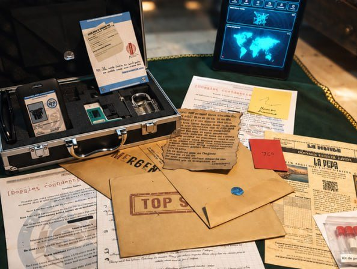
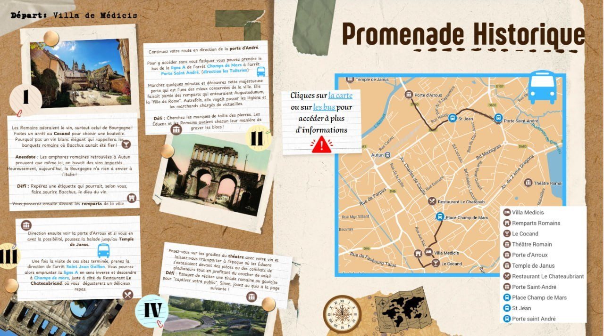

ISIS
Expérience d’enquête immersive et transmédia
- Objets physiques
- Documents et indices
- Interface numérique
Les expériences
Des univers différents, une même envie : faire vivre des histoires autrement.

Expérience d’enquête immersive et transmédia

Expérience ludique de voyage et de découverte patrimoniale
D’autres expériences sont en développement.
Écrire au studio
Une idée, un lieu, une histoire à faire vivre, ou simplement l’envie d’échanger ?